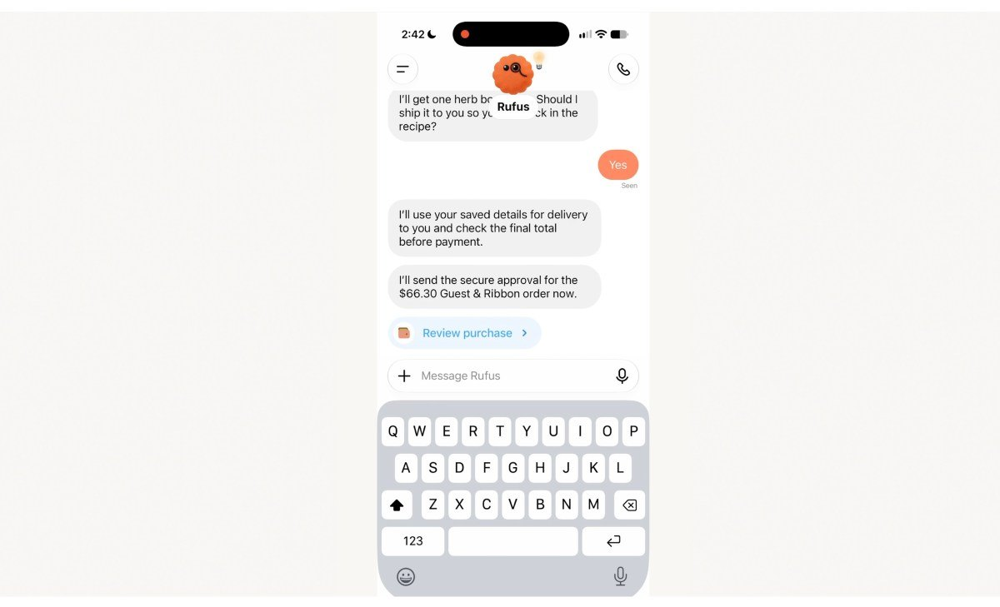
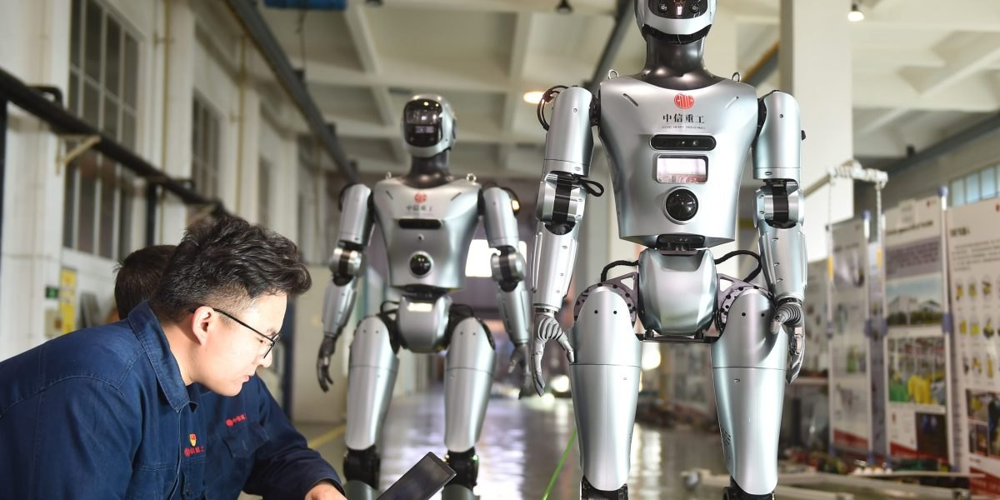

头条 一

图片来源：TechCrunchOpenAI 周五推出 ChatGPT Wallet，让 dots 智能体替你下单。首批只向美国 18 岁以上的 Pro 订阅用户开放，需绑定美国发行的 Visa、万事达或美国运通卡。智能体拿到的是支付令牌，看不到真实卡号，每笔购买都要用 Face ID 或指纹确认。
付款是智能体的最后一道关。批准权留在用户手里，但亚马逊等零售商仍在拦截智能体，能不能真正结账还要看商家让不让进。
来源：TechCrunch
头条 二

图片来源：Fortune据 Fortune 独家报道，OpenAI 已解散独立的机器人团队：研究人员并入首席研究官马克·陈领导的主研究团队，应用与硬件团队划归格雷格·布罗克曼领导的应用部门。OpenAI 称原因是 GPT-6 Astra 等通用模型已可直接用于机器人，机器人仍是长期方向。
机器人被降格为通用模型的一个下游应用，这与许多机器人创业公司“机器人要有自己的大脑”的前提相冲突。MIT 教授泰德雷克则认为，现场部署数据仍是创业公司的优势。
来源：Fortune
头条 三
图片来源：The Guardian据卫报，赫尔辛基大学的冯·普拉托团队读哥德尔 1009 页笔记，原本每周只能读懂约一页。9 月起请 Claude 梳理，几天内得到 650 页解读。Claude 列出 663 条定理，经 Coq 检验，约 400 条成立、约 200 条需修正、约 50 条有误。
AI 的长处是一次读完一千页并把前后连起来。逻辑学家哈姆金斯提醒：其中多少算 Claude、多少算哥德尔，还要历史学家来判断。
来源：The Guardian
付款的批准权还在人手里，真正的变量是商家愿不愿意放智能体进来。
机器人团队并入主研究部门，说明 OpenAI 认为“脑”比“身体”更值得先投入。
让 AI 读完一千页再由人用 Coq 逐条验证，可能是科研里更稳的分工。